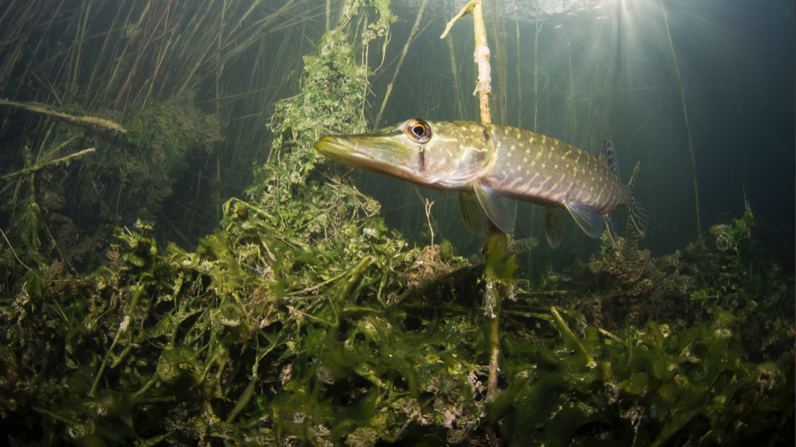
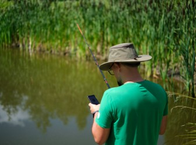

Resources
Publicly available datasets
NOAA Puget Sound Nearshore Fish 2017-2018 - 77,739 images sampled from video collected on and around shellfish aquaculture farms in an estuary in the Northeast Pacific; 67,990 objects (fish and crustaceans) annotated on 30,384 images.
List of Marine/freshwater images
BRUVNet - An open-sourced dataset from baited remote underwater video of freshwater and marine fish images used for fisheries monitoring and research
Deep learning based Nephrops counter for demersal trawl fisheries

Publicly available models
General purpose detector of fish shapes in images
Multi-class detector for Australian fish
Training resources
Machine learning based image collection, annotation and classification
In this online course you will learn about:
- concepts of data science, machine learning (ML), computer vision, deep learning and Convolutional Neural Networks (CNNs)
- how to pre-process and pre-annotate images to accelerate your ML projects
- how to apply data augmentation techniques
- how to build an image classification model with your own or example data
The course uses freely available libraries and computing resources on Google Colaboratory

Scientific publications
A Scalable Open-Source Framework for Machine Learning-Based Image Collection, Annotation and Classification: A Case Study for Automatic Fish Species Identification. 2022. Catarina NS Silva, Justas Dainys, Sean Simmons, Vincentas Vienožinskis, Asta Audzijonyte. Sustainability 14 (21), 14324
Preprint: A machine learning based image classification method to estimate fish sizes from images without a specified reference object. 2022. Catarina Nunes Soares Silva, Justas Dainys, Sean Simmons, Asta Audzijonyte. bioRxiv
Estimating catch rates in real time: Development of a deep learning based Nephrops (Nephrops norvegicus) counter for demersal trawl fisheries.2023. Ercan Avsar, Jordan P. Feekings, Ludvig Ahm Krag. Frontiers in Marine Science
Media and other popular science
Story about the collaboration between Microsoft and Australian Government’s Supervising Scientist Branch to build the baited remote underwter video image dataset from images at the Kakadu National park - Citizen scientists, AI and cloud bond to boost billabong health in the Top End